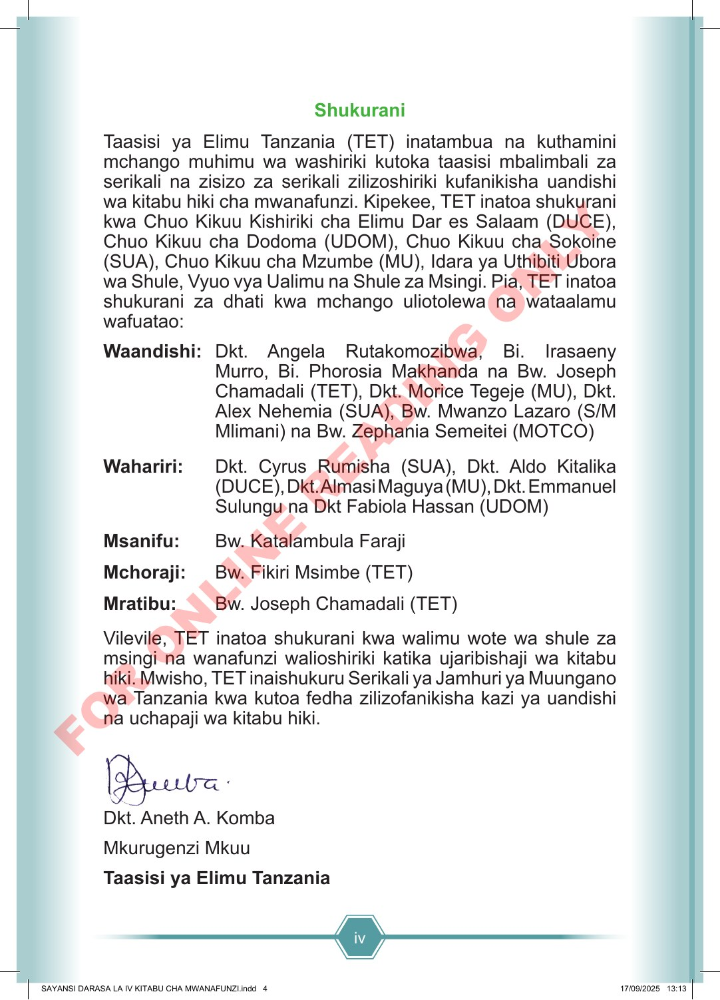

iv Shukurani Taasisi ya Elimu Tanzania (TET) inatambua na kuthamini mchango muhimu wa washiriki kutoka taasisi mbalimbali za serikali na zisizo za serikali zilizoshiriki kufanikisha uandishi wa kitabu hiki cha mwanafunzi. Kipekee, TET inatoa shukurani kwa Chuo Kikuu Kishiriki cha Elimu Dar es Salaam (DUCE), Chuo Kikuu cha Dodoma (UDOM), Chuo Kikuu cha Sokoine (SUA), Chuo Kikuu cha Mzumbe (MU), Idara ya Uthibiti Ubora wa Shule, Vyuo vya Ualimu na Shule za Msingi. Pia, TET inatoa shukurani za dhati kwa mchango uliotolewa na wataalamu wafuatao: Waandishi: Dkt. Angela Rutakomozibwa, Bi. Irasaeny Murro, Bi. Phorosia Makhanda na Bw. Joseph Chamadali (TET), Dkt. Morice Tegeje (MU), Dkt. Alex Nehemia (SUA), Bw. Mwanzo Lazaro (S/M Mlimani) na Bw. Zephania Semeitei (MOTCO) Wahariri: Dkt. Cyrus Rumisha (SUA), Dkt. Aldo Kitalika (DUCE), Dkt. Almasi Maguya (MU), Dkt. Emmanuel Sulungu na Dkt Fabiola Hassan (UDOM) Msanifu: Bw. Katalambula Faraji Mchoraji: Bw. Fikiri Msimbe (TET) Mratibu: Bw. Joseph Chamadali (TET) Vilevile, TET inatoa shukurani kwa walimu wote wa shule za msingi na wanafunzi walioshiriki katika ujaribishaji wa kitabu hiki. Mwisho, TET inaishukuru Serikali ya Jamhuri ya Muungano wa Tanzania kwa kutoa fedha zilizofanikisha kazi ya uandishi na uchapaji wa kitabu hiki. Dkt. Aneth A. Komba Mkurugenzi Mkuu Taasisi ya Elimu Tanzania SAYANSI DARASA LA IV KITABU CHA MWANAFUNZI.indd 4 SAYANSI DARASA LA IV KITABU CHA MWANAFUNZI.indd 4 17/09/2025 13:13 17/09/2025 13:13 F O R O N L I N E R E A D I N G O N L Y
Shukurani Taasisi ya Elimu Tanzania inatambua na kuthamini mchango muhimu wa washiriki kutoka taasisi mbalimbali za serikali na zisizo za serikali zilizoshiriki kufanikisha uandishi wa kitabu hiki cha mwanafunzi. Kipekee, Taasisi ya Elimu Tanzania inatoa shukurani kwa Chuo Kikuu Kishiriki cha Elimu Dar es Salaam, Chuo Kikuu cha Dodoma (UDOM), Chuo Kikuu cha Sokoine cha Kilimo, Chuo Kikuu cha Mzumbe (MU), Idara ya Uthibiti Ubora wa Shule, Vyuo vya Ualimu na Shule za Msingi. Pia, Taasisi ya Elimu Tanzania inatoa shukurani za dhati kwa mchango uliotolewa na wataalamu wafuatao: Waandishi: Daktari Angela Rutakomozibwa, Bibi Irasaeny Murro, Bibi Phorosia Makhanda na Bwana Joseph Chamadali (Taasisi ya Elimu Tanzania), Daktari Morice Tegeje (MU), Daktari Alex Nehemia (Chuo Kikuu cha Sokoine cha Kilimo), Bwana Mwanzo Lazaro (S/M Mlimani) na Bwana Zephania Semeitei (MOTCO) Wahariri: Daktari Cyrus Rumisha (Chuo Kikuu cha Sokoine cha Kilimo), Daktari Aldo Kitalika (Chuo Kikuu Kishiriki cha Elimu Dar es Salaam), Daktari Almasi Maguya (MU), Daktari Emmanuel Sulungu na Daktari Fabiola Hassan (UDOM) Msanifu: Bwana Katalambula Faraji Mchoraji: Bwana Fikiri Msimbe (Taasisi ya Elimu Tanzania) Mratibu: Bwana Joseph Chamadali (Taasisi ya Elimu Tanzania) Vilevile, Taasisi ya Elimu Tanzania inatoa shukurani kwa walimu wote wa shule za msingi na wanafunzi walioshiriki katika ujaribishaji wa kitabu hiki. Mwisho, Taasisi ya Elimu Tanzania inaishukuru Serikali ya Jamhuri ya Muungano wa Tanzania kwa kutoa fedha zilizofanikisha kazi ya uandishi na uchapaji wa kitabu hiki. Daktari Aneth A. Komba Mkurugenzi Mkuu Taasisi ya Elimu Tanzania